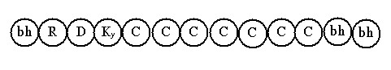
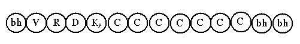
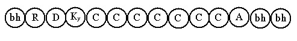
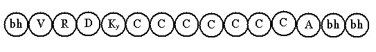
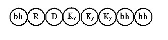
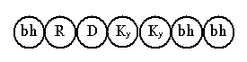
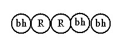

Bài 10 LỘ Ý MÔN THỜI BÌNH NHẬT LỘ Ý MÔN CẢNH RÕ. B. LỘ Ý MÔN CẢNH RÕ. ĐỊNH NGHĨA. Gọi là cảnh rõ vì cảnh này nêu bày trọn vẹn những chi tiết của cảnh nhưng không sắc nét như cảnh cực rõ. Cảnh cực rõ có tiềm lực mạnh hơn cảnh rõ, ví như sóng ngầm bình thường và sóng xoáy (ám chỉ cảnh cực rõ). Phân tích. Cảnh rõ trong trong lộ ý môn mang hai mô thức: chót đổng lực và chót hữu phần Khách. Mỗi mô thức có 8 Lộ: 1 lộ không HPVQ và 7 lộ có HPVQ theo thứ tự . Tổng cộng hai mô thức có được 16 tâm lộ . Biểu đồ. a) Mô thức chót đổng lực. 1- Tâm lộ cảnh rõ, chót đổng lực không HPVQ diễn tiến như sau:  Lộ này có được: - Chặng: 2 chặng (khai môn, đổng lực). 2- Tâm lộ chót đổng lực, có 1 HPVQ.  Lộ này giống như lộ trên, chỉ khác là có thêm 1 HPVQ. Sáu lộ còn lại cũng tương tự, chỉ thêm dần mỗi lộ một sát-na HPVQ. b) Mô thức chót hữu phần khách. 1- Tâm lộ cảnh rõ, chót hữu phần Khách, không HPVQ diễn tiến như sau:  Lộ này có được: - Chặng: 2 chặng (khai môn, đổng lực) 2- Tâm lộ cảnh rõ, chót hữu phần Khách có 1 HPVQ diễn tiến như sau:  Lộ này giống như trên, chỉ khác là có 1 HPVQ. Sáu lộ còn lại cũng tương tự, chỉ thêm mỗi lộ 1 sát-na HPVQ . C. LỘ Ý MÔN CẢNH KHÔNG RÕ Cảnh không rõ là loại cảnh thoáng hiện, thoáng mất, nên tâm khách không thể nhận rõ, để làm phát sanh đổng lực xử lý cảnh. Do đó, chỉ phát sanh tâm Hướng ý môn mà thôi, cảnh này chỉ thuần là danh pháp hay chế định. Cảnh không rõ có hai tâm lộ, 1 lộ có 3 sát-na Hướng ý môn và 1 lộ có 2 sát-na Hướng ý môn. Biểu đồ như sau: 1- Tâm lộ có 3 sát-na Hướng ý môn:  2- Tâm lộ có 2 sát-na Hướng ý môn:  Hai lộ này có được 1 chặng (khai môn), 3 hay 2 sát-na tâm Khách là tâm Hướng ý môn, có cho 8 hạng người trong 30 cõi hữu tâm. Nên ghi nhận rằng: Ở thời bình thường, lộ ý môn cảnh không rõ chỉ khởi lên khi người ta nhớ lại 6 cảnh 1 cách hời hợt, khi ấy tâm tư vẫn hững hờ thờ ơ. D. LỘ Ý MÔN CẢNH MƠ HỒ. Cảnh mơ hồ thường chỉ khởi lên trong giấc ngủ. Cảnh ở đây là 1 nét gợn (nimitta) của dòng ý thức đang tuôn chảy, nó chỉ đủ sức làm cho dòng hữu phần Rúng động mà thôi, vì thế đương sự đang nằm ngủ dường như không hề biết gì đến sự dao động ấy và chỉ khởi lên 2 hữu phần Rúng động rồi lại trở về hữu phần cơ bản. Diễn tiến tâm lộ cảnh mơ hồ như sau:  Cảnh mơ hồ chỉ có 1 lộ, hiện khởi cho 8 hạng người trong 30 cõi hữu tâm, không tâm khách, không chặng. TỔNG KẾT Lộ ý môn thông thường có được 41 lộ như đã giải: Cảnh cực rõ có: 22 lộ Tổng Cộng: 41 Lộ -ooOoo- Ðầu trang | Mục lục | 01 | 02 | 03 | 04 | 05 | 06 | 07 | 08 | 09 | 10 | 11 | 12 | 13 | 14 | 15 | 16 | 17 | 18 | 19 | 20 | 21 | 22 | 23 | 24 | 25 |